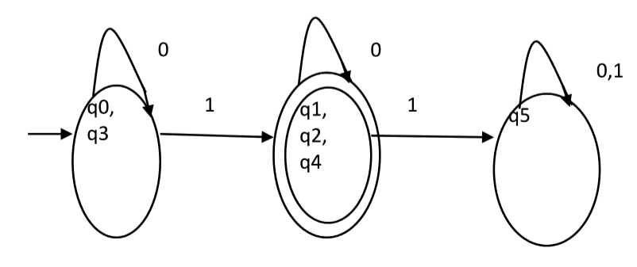
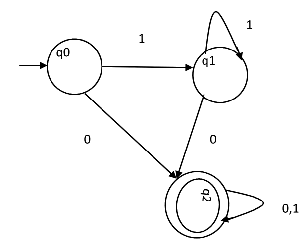

DFA minimization stands for converting a given DFA to its equivalent DFA with minimum number of states.
Minimization of DFA
Suppose there is a DFA D < Q, ∑, q0, δ, F > which recognizes a language L. Then the minimized DFA D < Q’, ∑, q0, δ’, F’ > can be constructed for language L as:
Step 1: We will divide Q (set of states) into two sets. One set will contain all final states and other set will contain non-final states. This partition is called P0.
Step 2: Initialize k = 1
Step 3: Find Pk by partitioning the different sets of Pk-1. In each set of Pk-1, we will take all possible pair of states. If two states of a set are distinguishable, we will split the sets into different sets in Pk.
Step 4: Stop when Pk = Pk-1 (No change in partition)
Step 5: All states of one set are merged into one. No. of states in minimized DFA will be equal to no. of sets in Pk.
How to find whether two states in partition Pk are distinguishable ?
Two states ( qi, qj ) are distinguishable in partition Pk if for any input symbol a, δ ( qi, a ) and δ ( qj, a ) are in different sets in partition Pk-1.
Example
Consider the following DFA shown in figure.

Step 1. P0 will have two sets of states. One set will contain q1, q2, q4 which are final states of DFA and another set will contain remaining states. So P0 = { { q1, q2, q4 }, { q0, q3, q5 } }.
Step 2. To calculate P1, we will check whether sets of partition P0 can be partitioned or not:
For set { q1, q2, q4 } :
δ ( q1, 0 ) = δ ( q2, 0 ) = q2 and δ ( q1, 1 ) = δ ( q2, 1 ) = q5, So q1 and q2 are not distinguishable.
Similarly, δ ( q1, 0 ) = δ ( q4, 0 ) = q2 and δ ( q1, 1 ) = δ ( q4, 1 ) = q5, So q1 and q4 are not distinguishable.
Since, q1 and q2 are not distinguishable and q1 and q4 are also not distinguishable, So q2 and q4 are not distinguishable. So, { q1, q2, q4 } set will not be partitioned in P1.
For set { q0, q3, q5 } :
δ ( q0, 0 ) = q3 and δ ( q3, 0 ) = q0
δ ( q0, 1) = q1 and δ ( q3, 1 ) = q4
Moves of q0 and q3 on input symbol 0 are q3 and q0 respectively which are in same set in partition P0. Similarly, Moves of q0 and q3 on input symbol 1 are q3 and q0 which are in same set in partition P0. So, q0 and q3 are not distinguishable.
δ ( q0, 0 ) = q3 and δ ( q5, 0 ) = q5 and δ ( q0, 1 ) = q1 and δ ( q5, 1 ) = q5
Moves of q0 and q5 on input symbol 0 are q3 and q5 respectively which are in different set in partition P0. So, q0 and q5 are distinguishable. So, set { q0, q3, q5 } will be partitioned into { q0, q3 } and { q5 }. So,
P1 = { { q1, q2, q4 }, { q0, q3}, { q5 } }
To calculate P2, we will check whether sets of partition P1 can be partitioned or not:
For set { q1, q2, q4 } :
δ ( q1, 0 ) = δ ( q2, 0 ) = q2 and δ ( q1, 1 ) = δ ( q2, 1 ) = q5, So q1 and q2 are not distinguishable.
Similarly, δ ( q1, 0 ) = δ ( q4, 0 ) = q2 and δ ( q1, 1 ) = δ ( q4, 1 ) = q5, So q1 and q4 are not distinguishable.
Since, q1 and q2 are not distinguishable and q1 and q4 are also not distinguishable, So q2 and q4 are not distinguishable. So, { q1, q2, q4 } set will not be partitioned in P2.
For set { q0, q3 } :
δ ( q0, 0 ) = q3 and δ ( q3, 0 ) = q0
δ ( q0, 1 ) = q1 and δ ( q3, 1 ) = q4
Moves of q0 and q3 on input symbol 0 are q3 and q0 respectively which are in same set in partition P1. Similarly, Moves of q0 and q3 on input symbol 1 are q3 and q0 which are in same set in partition P1. So, q0 and q3 are not distinguishable.
For set { q5 }:
Since we have only one state in this set, it can’t be further partitioned. So,
P2 = { { q1, q2, q4 }, { q0, q3 }, { q5 } }
Since, P1=P2. So, this is the final partition. Partition P2 means that q1, q2 and q4 states are merged into one. Similarly, q0 and q3 are merged into one. Minimized DFA corresponding to DFA of Figure 1 is shown in Figure 2 as:

{kind=link}
Question : Consider the given DFA. Which of the following is false?
1. Complement of L(A) is context-free.
2. L(A) = L ( ( 11 * 0 + 0 ) ( 0 + 1 )* 0* 1* )
3. For the language accepted by A, A is the minimal DFA.
4. A accepts all strings over { 0, 1 } of length atleast two.

A. 1 and 3 only
B. 2 and 4 only
C. 2 and 3 only
D. 3 and 4 only
{kind=link}
Solution : Statement 4 says, it will accept all strings of length atleast 2. But it accepts 0 which is of length 1. So, 4 is false.
Statement 3 says that the DFA is minimal. We will check using the algorithm discussed above.
P0 = { { q2 }, { q0, q1 } }
P1 = { q2 }, { q0, q1 } }. Since, P0 = P1, P1 is the final DFA. q0 and q1 can be merged. So minimal DFA will have two states. Therefore, statement 3 is also false.
So correct option is (D).